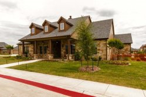

Villas of Stone Glen is located in highly sought-after Keller, Texas, boasting golf courses, lush open spaces and terrific restaurants. Villas of Stone Glen is the 3,000 square-foot clubhouse featuring an exercise room, multi-purpose room, meeting room, media area and a catering kitchen. The outdoor amenities feature a pool and patio, barbecue area, fire pit, walking & biking trail.